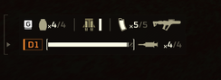
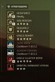
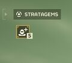
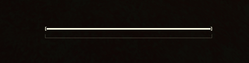
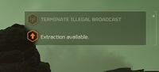

Heads-Up 显示
the 绝地潜兵's Heads-Up 显示 (HUD) shows 重要 information such as 生命值, 耐力, ammunition, and the map.
主要特性
其他信息

The 主体 章节 of the 绝地潜兵 2 Heads-Up 显示 is located in the bottom-left corner of the HUD and shows valuable information.
The information shown in this 章节 of the HUD includes:
- 装备 and Ammunition
- 榴弹
- 治疗剂
- Selected weapon
- 生命值 Bar
- Player tag (e.g. A1)
- Backpack item
战略配备数据

The 战略配备 list
The HUD 战略配备 章节
Located in the top-right 章节 of the HUD, the 战略配备 data 章节 includes a 反制 showing the 剩余 增援, and when pressing the Open 战略配备 List button, the 战略配备 list will open.
耐力条

The 耐力 Bar shows the 绝地潜兵's 当前 耐力 level. The 耐力 Bar also shows if the 绝地潜兵 is affected by any slowing 效果.
次要特性
指南针
The compass is located at the top of the HUD, and shows the four cardinal directions - North, South, East, and West. The compass also shows which 方向 markers placed on the map are in 关系 to the 绝地潜兵.
- Will also show 方向 to undiscovered 小型兴趣点 as a 问题-mark ("?") within 75-metres.
主要目标
At the top-right of the HUD, the 主体 目标 of the 当前 任务 are displayed.

主体 目标 on the HUD- The Compass
地图
- See map